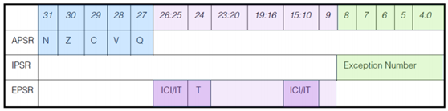
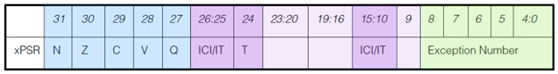

前言
最近在深入理解 RTOS 的原理并尝试写一个轻量化的 RTOS，再进行一定程度的了解后，发现任务切换等机制与ISA息息相关，于是写一篇文章记录 Cortex-M3 处理器的寄存器组介绍
寄存器组介绍

核心寄存器
R0 ~ R12
均为 32 位的通用寄存器(GPR)，用于数据操作。其中：
- R0~R7为低组寄存器，所有的指令都可以访问。
- R8~R12为高组寄存器，只有32位Thumb2指令和很少的16位Thumb指令能访问。
R13(SP)
为栈指针，Cortex-M3 物理上拥有两个堆栈指针，任一时刻只能使用其中的一个：
- 主堆栈指针（MSP）：复位后缺省使用的堆栈指针，用于操作系统内核以及异常处理（包括中断服务）。
- 进程堆栈指针（PSP）：由用户的应用程序代码使用。
具体使用那个受到 CONTROL 寄存器与处理器模式( Thread mode、Handler mode )的影响。
大多数情况下，如果你是裸机 编程，即没有用到嵌入式操作系统，那么 PSP 也没有必要使用。许多简单的应用可以完全依赖于 MSP，一般在操作系统中才会使用到 PSP，因其各个任务（或线程）的栈是要求相互独立的。
PSP 的初始值未定义，而 MSP 的初始值则会在复位流程中从存储器的第一个字中取出(比如 STM32 中断向量表里的 __inital_sp)
R14(LR)
为连接寄存器，用于在调用子程序时存储返回地址。
比如使用 BL 指令( 分支变连接，Branch and Link )调用一个函数，那么函数的返回地址(BL指令的下一个指令的地址)就会自动写入 LR 寄存器。值得注意的是多层函数调用会涉及 LR 被覆盖的问题，需要将每层函数的返回地址保存到一个指定的空间。
在异常处理期间，LR 也会被自动更新为特殊的 EXC_RETURN（异常返回）数值，之后该数值会在异常处理结束时触发异常返回，从而实现从异常处理返回到正确的用户程序中 。
需要注意的是，尽管 Cortex-M 处理器中的返回地址总是偶数（由于指令会对齐到半字地址上，因此，最低位即第 0 位为 0），LR 的第 0 位是可读可写的，有些跳转/调用操作需要将 LR（或正在使用的任何寄存器）的第 0 位置 1 来表示当前处理器处于 Thumb 状态。
Thumb 状态 指的是：处理器当前按 Thumb 指令集来解释和执行指令。
在 ARM 架构里，历史上有两种执行状态：
- ARM state：执行 ARM 指令
- Thumb state：执行 Thumb 指令 它们的区别本质上是“CPU 用哪套指令编码规则解码当前内存里的机器码”。
对 Cortex-M 来说，最关键的一点是： Cortex-M 只支持 Thumb 状态，不支持传统 ARM state。
所以在 Cortex-M3 上你可以直接理解为：
- CPU 必须工作在 Thumb 状态
- 跳转到某个函数地址时，必须让 CPU 知道“这是 Thumb 代码地址”
R15(PC)
为程序计数寄存器，用于告诉处理器下一条指令在存储器中的地址。
因为Cortex-M3内部使用了指令流水线，读PC时返回的值时当前指令的地址值+4。
特殊寄存器
Cortex-M3中的特殊功能寄存器包括：
- 程序状态寄存器组（PSRs/xPSR）
- 中断屏蔽寄存器组（PRIMASK、FAULTMASK以及BASEPRI）
- 控制寄存器（CONTROL）
它们只能被专用的MSR/MRS指令访问，而且它们也没有与之相关联的访问地址。如下：
MRS <gp_reg>, <special_reg> ; 读特殊功能寄存器的值到通用寄存器
MSR <special_reg>, <gp_reg> ; 写通用寄存器的值到特殊功能寄存器
CONTROL
控制寄存器有两个用途，其一用于定义特权级别（CONTROL[0]），其二用于选择当前使用哪个堆栈指针（CONTROL[1]）。我们一般只关注低两位。
| Register Bit | 0 | 1 |
|---|---|---|
| CONTROL[0] | 特权级的线程模式 | 用户级的线程模式 |
| CONTROL[1] | 选择主堆栈指针MSP（复位后的缺省值） | 选择进程堆栈指针PSP |
对于 Handler mode，其不受 CONTROL 的影响，固定如下：
- 永远都是特权级的。
- 只允许使用MSP。
由于 Handler mode 下用于都是特权级的，且只允许使用MSP；可见这个寄存器主要用于 Thread mode 下的设置。 在 Thread mode 下，可设置为特权级的线程模式或非特权级的线程模式；使用MSP或使用PSP。
PRIMASK、FAULTMASK、BASEPRI
中断屏蔽寄存器组（PRIMASK、FAULTMASK以及BASEPRI）用于控制“异常”的使能（enable）和除能（disable）。
| Register Name | Description |
|---|---|
| PRIMASK | 仅1位。当为1时,表示允许NMI和Hard fault异常,而其它所有的中断和异常都会被屏蔽。它的缺省值为0，表示没有关中断。 |
| FAULTMASK | 仅1位。当为1时,表示仅允许NMI异常,其它所有中断和错误处理异常都会被屏蔽。它的缺省值为0，表示没有关异常。 |
| BASEPRI | 这个寄存器最多有9位（由表达优先级的位数决定）。它定义了被屏蔽优先级的阈值。当它被设成某个值后，所有优先级号大于等于此值得中断都被关闭（优先级号越大，优先级越低）。但如果被设为0，则不关闭任何中断。它的缺省值为0。 |
PSRs/xPSR
程序状态寄存器在其内部又被分为三个子状态寄存器：
- 应用程序PSR（APSR）：
- 中断号PSR（IPSR）：
- 执行PSR（EPSR）：
如下：

xPSR：

通过MRS/MSR指令，这3个PSRs即可以单独访问，也可以组合访问（2个组合，3个组合都可以）。
当使用三合一的方式访问时，应使用名字“xPSR”或者“PSR”。